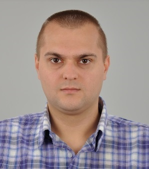

Лична информация: Владимир Илиев Киров

Адрес: България, гр. Асеновград, 4230, ул. Червена Скала №7,
Мобилен телефон: +359 896 482 336, +359 888 455 943,
E-mail:vladimir__kirov@abv.bg
Социална мрежа/чат – Facebook, Linkedin,
Пол Мъж | Дата на раждане 28/04/1988 | Националност българин
Компютърни умения и компетенции:
• Microsoft Office 2007, Adobe Photoshop и интернет приложения;
• Свидетелство за придобита професионална квалификация
по специалност "Софтуерен специалист", професия "Програмист",
образец на МОН от ЦПО към "Информационно обслужване" АД., InfoStart - платформа за ИТ компетенции;
• Придобита образователно - квалификационна степен „Магистър”
в Пловдивски Университет „Паисий Хилендарски”, специалност „Финансов Мениджмънт”.
Копененции по следните програмни езици:
- Обща професионална подготовка + Обща компютърна грамотност;
- Programming Basics (C#);
- HTML5, CSS3 & JavaScript(JQuery, JSON и AJAX);
- Relational Databases (Oracle SQL, dbForge Studio for Oracle, Balsamiq, MySQL etc.);
- PHP: Hypertext Preprocessor, връзка между PHP & MySQL бази от данни;
- Software architecture and Design.